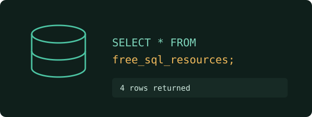

Free SQL Learning Resources
These are four free websites I recommend for learning SQL, from complete beginner to confident user.

-
W3Schools SQL Tutorial
Short beginner lessons with a "Try it Yourself" editor, so you can run queries right away.
-
SQLBolt: Learn SQL with Interactive Lessons
Step-by-step exercises in your browser that teach one SQL idea at a time.
-
SQLZoo: Interactive SQL Practice
Lots of practice questions with instant feedback, good for testing what you learned.
-
PostgreSQL Official Tutorial
The official guide from the PostgreSQL team, useful once you want to use a real database.